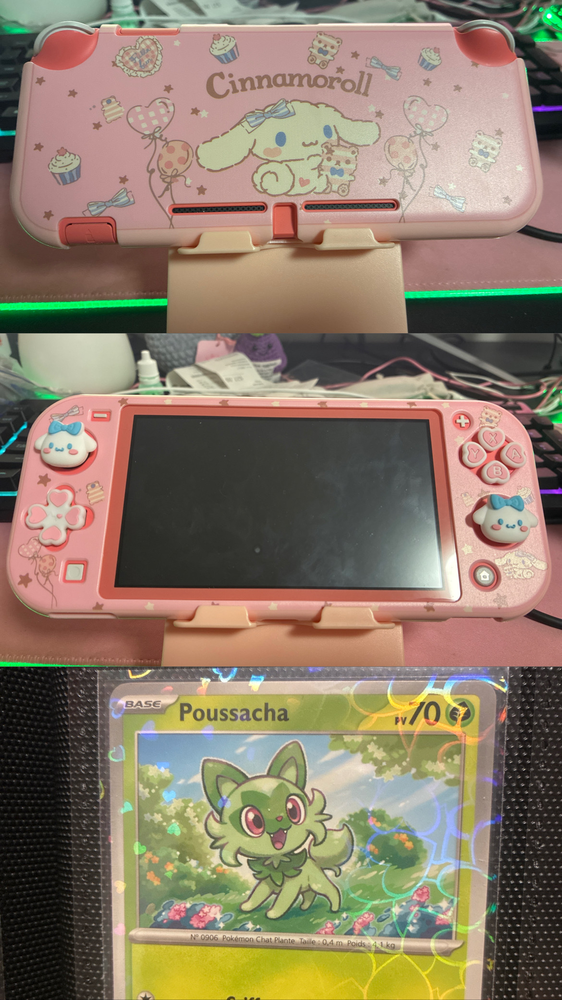

so i am collecting pokémon cards ! i went to my first cardshow in may with friends and it was a lot of fun◝(ᵔᗜᵔ)◜lots of vendors , very similar to other conventions . . and definitely a place where a lot of money got spent ( ꩜ ᯅ ꩜;) but it was definitely worthwhile and i hope to go to many more ! getting to see new cards , organise them and
i also got a nintendo switch lite 𐔌՞. .՞𐦯 i bought pokemon za with it , and i plan on getting tomodachi life , pokémon diamond , pearl , scarlet , violet , firered & leafgreen and maybe sword & shield (๑ᵔ⤙ᵔ๑) possibly animal crossing new horizons too , although the only ah game i had played before was animal crossing pocket camp . . which was fun too , maybe i should revisit ?
i also want to get a 3ds so i can play the era of pokémon games on the ds consoles :3 i remember moon being fun !
i have also been continuing to keep up with pokémon go , sending a lot of them from there to pokémon home (˶ˆᗜˆ˵) collecting is fun everywhere that i get to do it ! and i got pokémon tcg pocket to . . rip packs for free lol
picture below of my cute switch lite customisations , and a funny french sprigatito ( poussacha )
